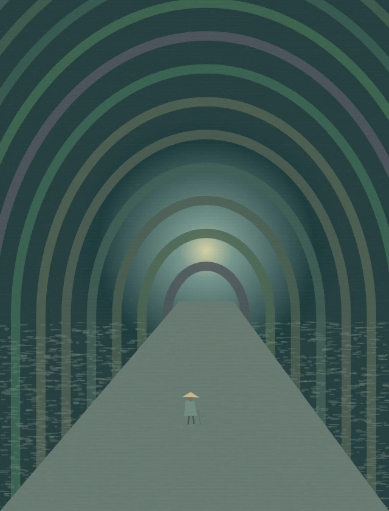

Back to the gardenAn imagined world inspired by cinemaDream 04夢
The Tunnel
A passage to the other side of life and death.
04 / 08
A few notes from the dream
An independent visual homage
The arch gathers the last light of the hillside. Inside, one curve follows another until the exit becomes a small, patient glow. The mist moves, but the passage keeps its shape.
Distance becomes something almost tangible here. Change your viewpoint to see the walls close around the road, then follow the opening toward a quieter horizon. The landscape asks for attention rather than haste.